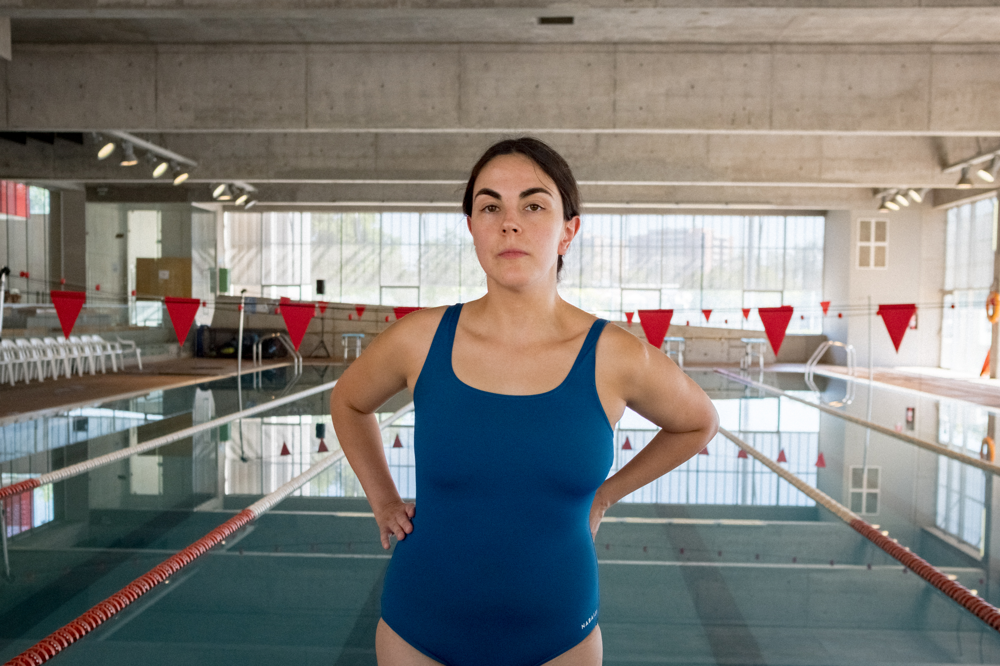
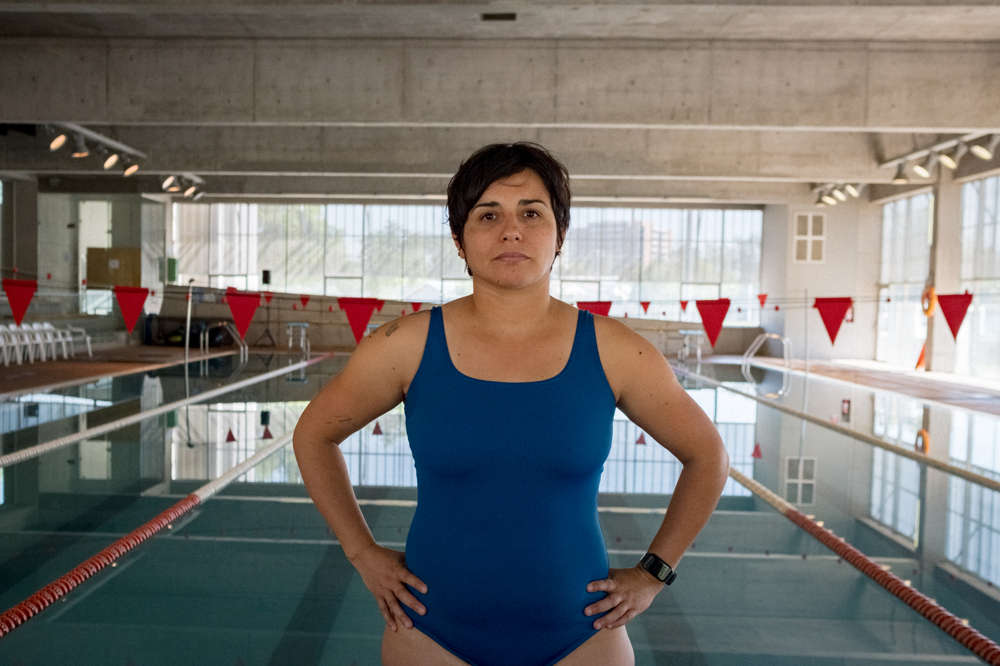
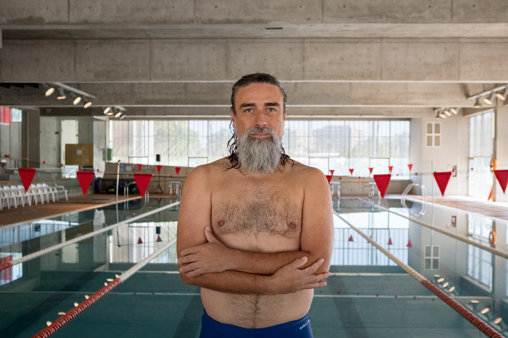
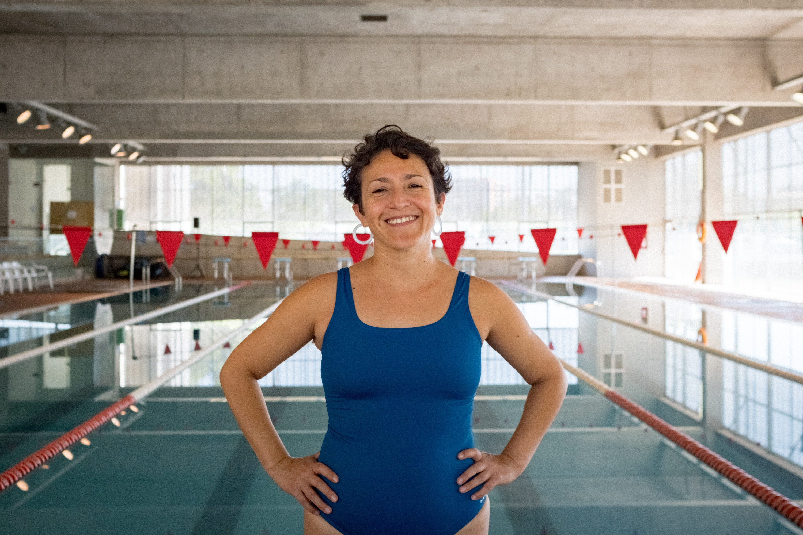
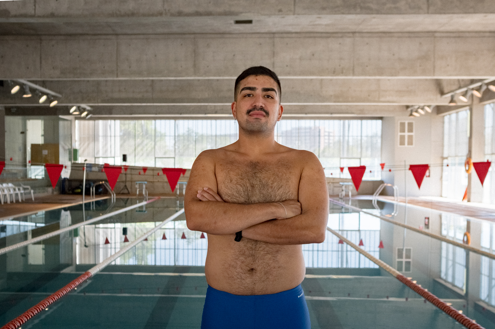
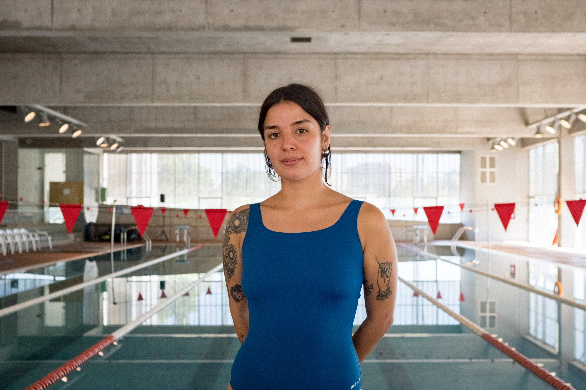
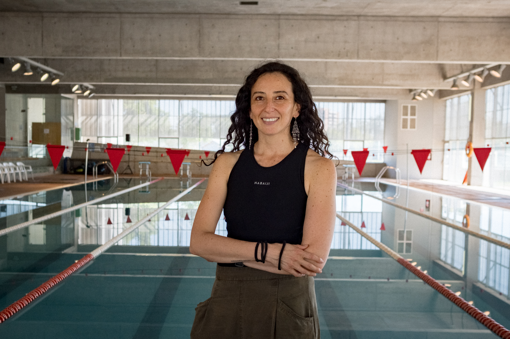
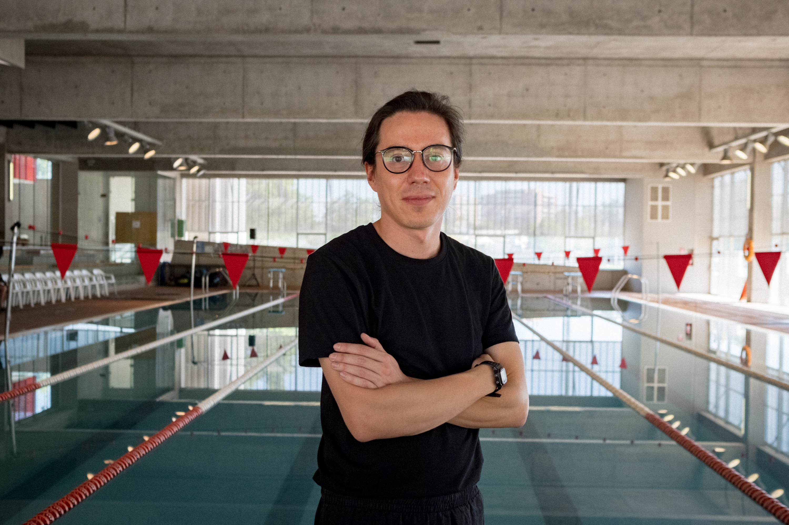
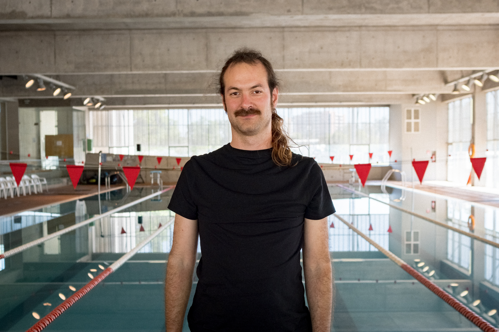
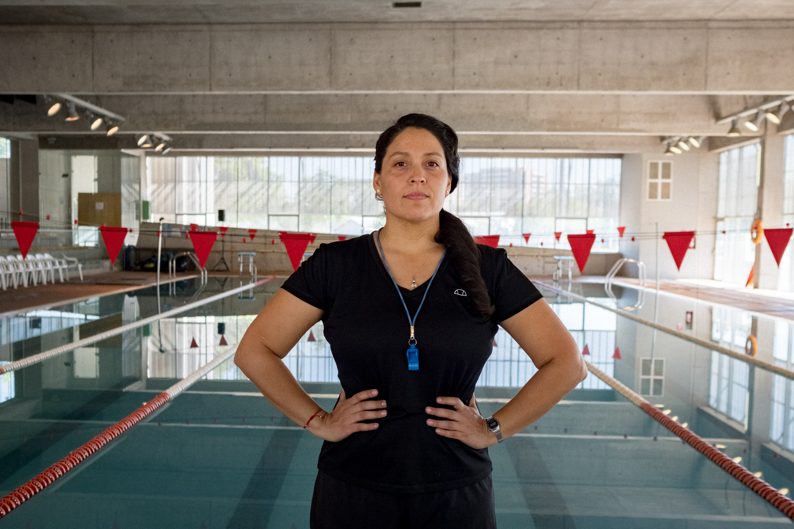

Performers
Retratos: Sebastián Arriagada.

Amparo Saona Ríos
Actriz. Participante y elenco.

Deysi Cruz Vásquez
Artista y educadora. Participante y elenco.

Inti Vega Jones
Médico y psicomotricista. Participante y elenco.

Jenniffer Verdugo Merello
Psicóloga. Participante y elenco.

Sergio Menares Navarro
Ingeniero comercial. Participante y elenco.

Sofía Hurtado Tapia
Productora cultural. Participante y elenco.
Nadadorxs
Agradecemos enormemente a todxs los nadadorxs que participaron del concierto Nada como una metáfora:
Amanda Aravena Letelier, Ana Campos Canessa, Andrea Rojas Milla, Andrés González, Beatriz Martínez Améstica, Camila Torres Ceballos, Claudia Williamson, Estefanía Vilches, Ignacio Ruano Suárez, Irene Farías Valdés, Javier Ramírez Arenas, María José Bravo, Matilda Morales, Natalia Lam, Paloma Toro Canales, Ricardo Ramírez Lepe, Rocío Albornoz Marambio, Rodrigo Norambuena, Tamara Arenas Brito, Tamara Uribe Rojas, Yanniry Jaspe Sanguino.
Equipo

Fernanda Fábrega Rubio
Artista y gestora. Directora del proyecto.

Matías Serrano Acevedo
Artista sonoro y docente. Director de sonido.

Santiago Corvalán Garretón
Sonidista. Productor técnico y diseño de síntesis.

Gissela Cabrera Ramos
Profesora. Experta en actividades acuáticas.

Sebastián Arriagada
Artista medial. Audiovisualista.
Créditos
Sesiones y concierto de Aproximaciones subacuáticas en Piscina de Campo Deportivo Juan Gómez Millas, Universidad de Chile, 2025-2026.
Colaboradores
Con el apoyo de VAEC, DDAF, Magíster en Artes Mediales, Núcleo de Artes Sonoras de la Universidad de Chile y Archivo Veintidós.